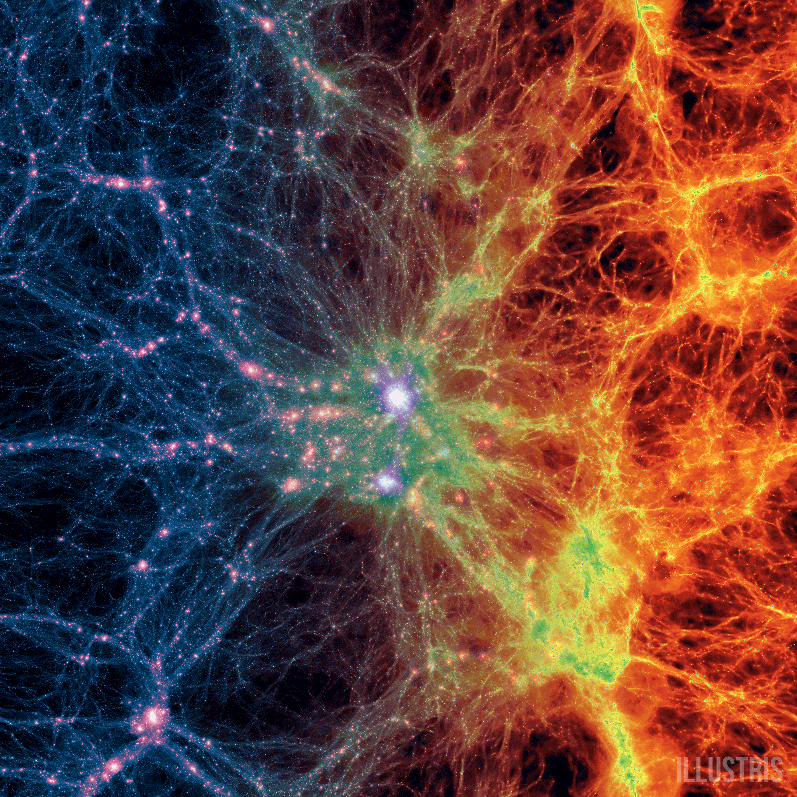
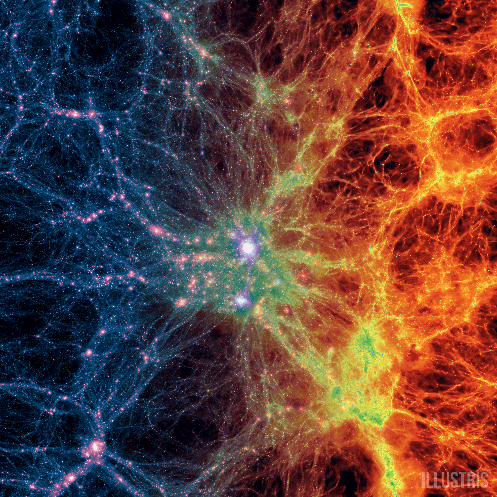

Iury Roque é meu irmão. O conheço desde que nasceu.
Lucas Pineiro mora em Aracaju e tivemos contato em um momento de conversa em grupo.
Erickson Siqueira foi a pessoa com quem realizei a primeira dinâmica em grupo.
/i.s3.glbimg.com/v1/AUTH_59edd422c0c84a879bd37670ae4f538a/internal_photos/bs/2019/I/k/R0PNm2RmOR7VHnZUKzSA/red-shanked-douc-mogens-trolle.jpg) 
